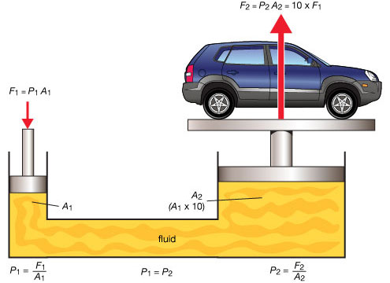

Lecția 3 – Legea lui Pascal. Aplicații
Ideea-cheie: când apeși pe un lichid aflat într-un vas închis, presiunea produsă se transmite prin lichid în toate direcțiile.
Ce vei înțelege
- ce spune legea lui Pascal;
- de ce lichidele pot transmite apăsarea;
- cum funcționează presa hidraulică;
- de ce un cric hidraulic poate ridica o mașină.
Cuvinte-cheie
presiune lichid piston hidraulic
În această lecție folosim notații simple: forțe, arii și presiuni.
Știu deja – presiunea
Presiunea arată cât de mult apasă o forță pe o suprafață.
Unde:
- \(p\) este presiunea;
- \(F\) este forța de apăsare;
- \(S\) este aria suprafeței.
Unitatea de măsură
Un pascal înseamnă o forță de \(1\,N\) repartizată pe o suprafață de \(1\,m^2\).
Experimentez – două seringi cu apă
Imaginează-ți două seringi unite printr-un tub flexibil, umplute cu apă. Când apeși pe un piston, celălalt piston se mișcă.
Observ
Când apeși pe un piston, apa nu dispare și nu se comprimă ușor. Ea transmite apăsarea către celelalte părți ale sistemului.
De ce folosim lichide?
Lichidele sunt considerate aproape incompresibile. Adică volumul lor se schimbă foarte greu când sunt apăsate.
De aceea, ele sunt bune pentru transmiterea apăsării în sisteme hidraulice.
Rețin – Legea lui Pascal
Legea lui Pascal: presiunea exercitată din exterior asupra unui lichid aflat în repaus se transmite cu aceeași valoare în toate direcțiile și în toată masa lichidului.
În cuvinte simple: dacă într-un punct al lichidului produci o presiune, aceeași presiune ajunge și în celelalte puncte ale lichidului.
Atenție la idee
Presiunea se transmite la fel, dar forța poate fi diferită dacă suprafețele pistoanelor sunt diferite.
Presa hidraulică
Într-o presă hidraulică există două pistoane cu arii diferite, unite printr-un lichid.

Imagine din folderul lecției: lichidul transmite presiunea, iar pistonul mare poate exercita o forță mai mare.
Aplic – relația pentru presa hidraulică
Pentru cele două pistoane, presiunea este aceeași:
De aici putem afla forța de la pistonul mare:
Exemplu numeric
Pe pistonul mic se exercită \(f=30\,N\). Aria pistonului mic este \(S_1=2\,cm^2\), iar aria pistonului mare este \(S_2=20\,cm^2\). Calculăm forța \(F\) de la pistonul mare.
Scriem formula:
Înlocuim datele:
Calculăm:
Aplicații ale legii lui Pascal
Cricul hidraulic
Ridică o mașină folosind un lichid și pistoane cu arii diferite.
Frâna hidraulică
Apăsarea pedalei se transmite prin lichid până la roți.
Elevatorul hidraulic
Ridică platforme sau mașini în service-uri.
Utilaje hidraulice
Excavatoare, tractoare și prese industriale folosesc sisteme hidraulice.
Știai că?
Presele hidraulice sunt folosite în agricultură, industria auto, reciclare, prelucrarea metalelor și alte domenii în care este nevoie de forțe mari.
Verificare rapidă
Alege câte o variantă pentru fiecare item, apoi apasă pe Verifică.